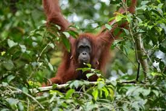

Orang Outan
Prénom : Tanuki
Race : Orang Outan
Habitat : jungle tropicale
Les orangs-outans sont des grands singes originaires d'Indonésie et de Malaisie. Ils sont connus pour leur intelligence remarquable et leurs longues brachiations à travers les arbres.